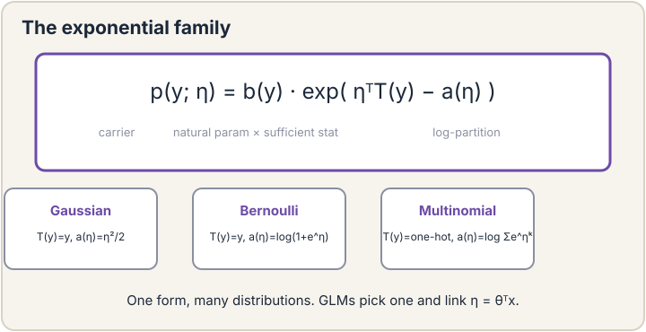
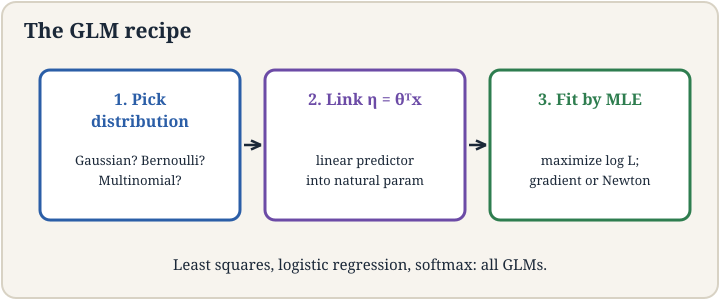
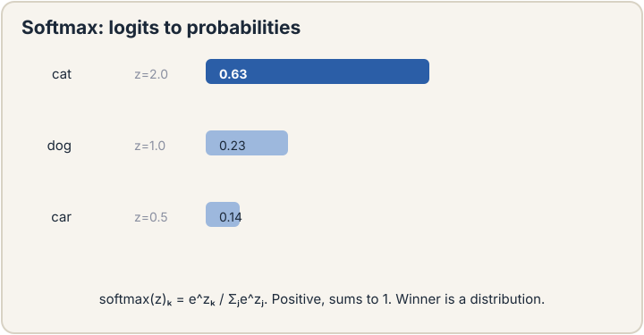

Lecture 4: The Exponential Family and Generalized Linear Models
Video blocked (ad-blocker or local file mode).
Watch on YouTubeVideo not loading? Watch on YouTube
Original lecture. Chris Ré unifies regression and classification under GLMs and derives softmax and cross-entropy.
The job: three diagnoses, one model
Lecture 3 classified tumors: benign or malignant, two classes. Now the doctor has three possible diagnoses: benign, malignant type A, malignant type B. The sigmoid gives one probability. We need three probabilities that sum to 1. More generally, the course so far built two separate machines: least squares for numbers, logistic regression for yes-or-no. They feel like different inventions. They are not. Underneath both sits one distribution family and one three-step recipe that generates both, plus the multi-class model, for free.
First attempt: three sigmoids
The naive idea: train three separate logistic regressions, one per diagnosis, each answering “this one or not?” Watch it break on a toy. A tumor scores z = (2.0, 1.0, 0.5) on the three one-vs-rest models. Sigmoids give (0.88, 0.73, 0.62). Sum: 2.23. These are not probabilities of mutually exclusive outcomes. They do not sum to 1 and they cannot be compared. Normalize by dividing by the sum: (0.39, 0.33, 0.28). That works, but why this normalization and not another? And why three separate fits when the classes compete?
The key question: is there one framework where the number-loss, the yes-no loss, and the multi-class loss are all the same idea with different settings?
One family: the exponential family
A large club of distributions shares one algebraic shape. A distribution is in the exponential family if its density can be written as:
p(y; eta) = b(y) * exp(eta^T T(y) - a(eta))
Three parts. eta is the natural parameter: the knob vector of the distribution. T(y) is the sufficient statistic: the function of y the distribution actually cares about (often just y itself). a(eta) is the log partition function: the normalizer that makes the probabilities sum to 1. b(y) is a base measure that does not involve the knobs.
Check that the Gaussian fits. For y with mean mu and variance 1, some algebra rewrites the bell curve into exactly this shape with eta = mu, T(y) = y, and a(eta) = eta^2/2. Check the Bernoulli: for y in {0,1} with P(y=1) = phi, the mass function rewrites with eta = log(phi/(1-phi)) (the logit), T(y) = y, and a(eta) = log(1 + e^eta). Both distributions from lectures 2 and 3 live in the same family. The lecture does this algebra live. The takeaway is the membership, not the manipulation.
The family pays rent immediately. Differentiate the log partition function a(eta) and you get the mean: d/d(eta) a(eta) = E[T(y)]. For the Gaussian, d/d(eta) (eta^2/2) = eta = mu. The mean falls out of the normalizer by differentiation. This is not a coincidence for one distribution. It holds for every member of the family. It is the machinery the next section uses.

The GLM recipe: three steps
A generalized linear model builds a supervised learner from any exponential-family distribution in three steps.
Step 1: pick the distribution. Model the target as y | x ~ ExponentialFamily(eta). For house prices, the Gaussian. For tumors, the Bernoulli.
Step 2: tie the knobs to the input linearly. Set eta = theta^T x. The natural parameter is a linear function of the features. This is the “linear” in the name: the model’s one linear score drives everything.
Step 3: read off the prediction. The predicted mean is E[T(y)] = d/d(eta) a(eta) evaluated at eta = theta^T x.
Run the recipe on the Gaussian: a(eta) = eta^2/2, derivative eta, so the prediction is theta^T x. Least squares appears. Run it on the Bernoulli: a(eta) = log(1+e^eta), derivative e^eta/(1+e^eta) = 1/(1+e^-eta). The sigmoid appears, and with it logistic regression. Two lectures of separate inventions collapse into one recipe with two settings.

Softmax: the multi-class answer
For k classes, the distribution is the multinomial: one roll of a k-sided die. Its natural parameter is a vector eta of length k-1 (the last class is the reference). The GLM recipe says: compute a linear score z_j = theta_j^T x per class, then convert scores to probabilities. The conversion the exponential family hands us is the softmax:
P(y = j | x) = e^(z_j) / sum over c of e^(z_c)
Work it on the toy. Scores z = (2.0, 1.0, 0.5). Exponentiate: (7.39, 2.72, 1.65). Sum: 11.76. Divide: (0.63, 0.23, 0.14). Three valid probabilities summing to 1, with the highest score getting the largest share. Unlike three separate sigmoids, the classes now compete inside one normalization.
Why softmax and not something else? The lecture gives four reasons, and they are worth memorizing because interviewers ask.
First, it is the GLM answer. The multinomial is in the exponential family, and the recipe outputs exactly this form. It is not ad hoc. It is what the framework says.
Second, it is smooth. Scores interpolate into probabilities without jumps, so gradients flow to every class weight. A hard “pick the max” would send zero gradient to the losers and throw away information.
Third, it is the maximum-entropy choice: among all distributions with the same expected scores, it assumes the least beyond the data.
Fourth, it is numerically convenient: stable to compute and fast. The lecture’s bottom line is blunt: softmax became the standard because it has all four properties, and you need a reason to use anything else.

Cross-entropy: the multi-class loss
Fit softmax by MLE. The likelihood of the true class j is its predicted probability p_j. The negative log likelihood is:
loss = -log(p_true class)
This is the cross-entropy loss. Read it on the toy: if the true diagnosis is class 1 and the model says (0.63, 0.23, 0.14), the loss is -log(0.63) = 0.46. If the model had said 0.05 for the true class, the loss would be -log(0.05) = 3.00. Confident and right is cheap. Confident and wrong is ruinous. For two classes, cross-entropy reduces exactly to the logistic regression loss of lecture 3. One loss, all settings.
The gradient keeps the familiar shape: (predicted probabilities minus the one-hot truth) times features. Error times feature, now with vector-valued error. Every learning rule in the classical half of this course is this shape.
The honest price
The GLM framework buys unity and charges flexibility. Eta must be linear in x: eta = theta^T x. If the true boundary between classes is curved, no GLM can draw it. The lecture’s tumor example is kind: real data is not. This linearity ceiling is the reason lectures 7 and 8 exist: neural networks are what you build when you refuse to accept eta = theta^T x. Second, softmax spreads probability over all classes, which costs O(k) per prediction. With k = 50,000 words (lecture 14), that normalization is the bottleneck the rest of the field works around. Third, cross-entropy punishes confident errors without bound: one mislabeled example with p = 10^-6 contributes a loss of 13.8 and drags the fit. Label noise hurts more here than under squared loss.
Mapping back
| Idea | Pain it answers | How |
|---|---|---|
| Exponential family | Least squares and logistic regression felt like separate inventions | Both are one shape: eta, T(y), a(eta); the mean is the derivative of the normalizer |
| GLM recipe | Each new target type needed a new derivation | Three steps generate the model from any family member |
| Softmax | Three sigmoids sum to 2.23, not probabilities | One normalization: e^z_j / sum e^z_c; classes compete; (2.0,1.0,0.5) -> (0.63,0.23,0.14) |
| Cross-entropy | Needed a multi-class loss | -log(p_true): 0.46 when right at 0.63, 3.00 when right at 0.05 |
Distributions whose density factors as b(y) exp(eta^T T(y) - a(eta)): a natural parameter eta, a sufficient statistic T(y), and a log partition function a(eta) that normalizes. Gaussians and Bernoullis are both members. The dividend: the mean is the derivative of a(eta), so predictions fall out of the normalizer by differentiation. It is the shared basement under lectures 2 and 3. The logit, eta = log(phi/(1-phi)). Invert it and you get the sigmoid phi = 1/(1+e^-eta). The sigmoid is not a choice. It is the inverse of the Bernoulli’s natural parameter mapping.
One, pick the exponential-family distribution for the target: Bernoulli for yes-or-no. Two, set the natural parameter linearly: eta = theta^T x. Three, predict the mean: E[y] = a’(eta). For the Bernoulli, a(eta) = log(1+e^eta), so a’(eta) = 1/(1+e^-eta), the sigmoid. Logistic regression drops out with no extra assumptions. Nothing breaks. You get deep learning. Step 2’s linearity is the GLM’s ceiling. Replace theta^T x with a network and the recipe still works: pick the distribution, drive eta with the network, read off the mean. Lectures 7 and 8 do exactly this.
One, it is the GLM’s answer for the multinomial: the exponential family dictates the form. Two, it is smooth: every class gets gradient, unlike a hard max that starves the losers. Three, it is maximum entropy: it assumes the least beyond the expected scores. Four, it is numerically convenient and fast. The lecture’s verdict: these four together made it the standard, and you need a reason to deviate. Exponentials: (7.39, 2.72, 1.65), sum 11.76, probabilities (0.63, 0.23, 0.14). Loss = -log(0.63) = 0.46. If the model gave the true class 0.05 instead, the loss would be 3.00: confident errors are punished hard.
Recap: the whole lesson on one screen
- The job. Three diagnoses, one model. Three sigmoids sum to 2.23. Not probabilities.
- The key question. Are the number-loss, the yes-no loss, and the multi-class loss one idea with different settings?
- One family. p(y. Eta) = b(y) exp(eta^T T(y) - a(eta)). Gaussian and Bernoulli both fit. The mean is a’(eta).
- The recipe. Pick the distribution. Set eta = theta^T x. Predict a’(eta). Least squares and logistic regression fall out.
- Softmax. e^z_j / sum e^z_c. Toy: (2.0,1.0,0.5) becomes (0.63,0.23,0.14). Four whys: GLM-dictated, smooth, maximum-entropy, convenient.
- Cross-entropy. -log(p_true class). 0.46 when right at 0.63; 3.00 when right at 0.05. Reduces to logistic loss at k=2.
- The honest price. Eta is linear: curved boundaries are impossible. Softmax costs O(k) per prediction. One mislabeled example can dominate the loss.
Official sources and further reading
Official: - Lecture 4 video, Stanford Online YouTube: https://www.youtube.com/watch?v=8gVi4Rk21Eg — Chris Ré fits the Gaussian and Bernoulli into the exponential family, states the GLM recipe, and derives softmax and cross-entropy with the four whys. - Official subtitle transcript (en-US): the lecture’s spoken text. - CS229 Spring 2026 official course notes (local PDF): the full exponential-family algebra the lecture sketches.
Caveats from these sources. The lecture does the Gaussian and Bernoulli rewrites live and fast. The algebra is in the notes, the membership claim is what matters. The “four whys” of softmax are the lecture’s explicit list: GLM form, smoothness, maximum entropy, numerical convenience. Maximum entropy is presented as the philosophical reason the lecturer personally finds least convincing. It is included because the literature cites it.
Connections to the other courses
- CS229 L02-L03: the two models this lesson unifies: least squares and logistic regression.
- CS229 L05: the generative alternative: model p(x|y) instead of p(y|x).
- CS229 L07-L08: breaking the linearity ceiling: eta as a neural network.
- CS229 L14: softmax at k = 50,000 words: the bottleneck that shapes language model training.
- CS224N: cross-entropy as the training loss for every neural language model.
Sources
- VIDEOLecture 4 video, Stanford Online YouTube
- NOTESOfficial subtitle transcript (en-US)
- NOTESCS229 Spring 2026 official course notes (local PDF)